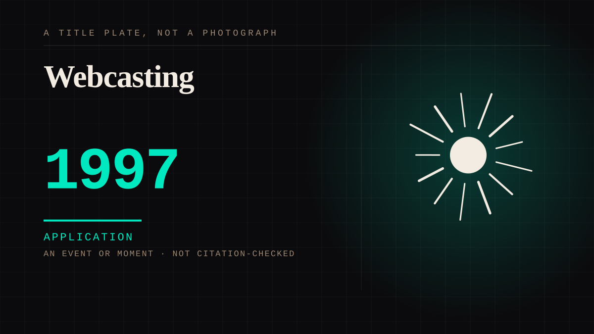

An event or moment · 1997 · Live
Webcasting
Streaming video over a network, at first unbroadcast and unproduced, from a bedroom or a desk.

The medium that removed the gatekeeper before it removed the schedule. Everything a creator economy is today existed in this form first, badly, and was not interesting to anybody.
Application. One-sided attachment put to work on purpose. Creator economies, community, fandom as infrastructure, and the things that genuinely help people. Not automatically good - a tool with an obvious use is a tool that will also get a bad one.
Where it sits
1950 1950-1999 · 1997 1999
Provenance · 1 source record(s)
- retrievableWebcasting - streaming live audio and video over the internet - went mainstream in the mid-1990s, with RealAudio in 1995 and the 1995 relaunch of Justin and Eric's site as the first widely recognised example. Before it, a performance was a place you had to beWebcasting (Wikipedia). ↗
Connected · 2 out, 3 in
Justin.tv becomes Twitchcame before · 2011 · An event or momentThe podcast as an intimate mediumcites · 2014 · A mechanism or tacticThe machine that answered backdepicts · 1979 · A workYouTube launchescame after · 2005 · An event or momentJustin.tv becomes Twitchcame after · 2011 · An event or moment
It sits in